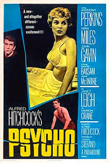
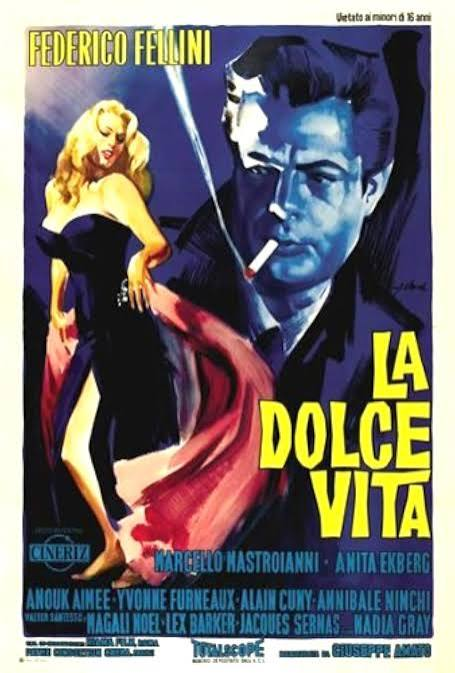
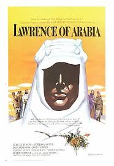
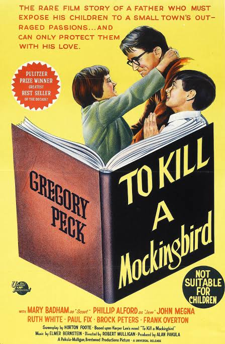
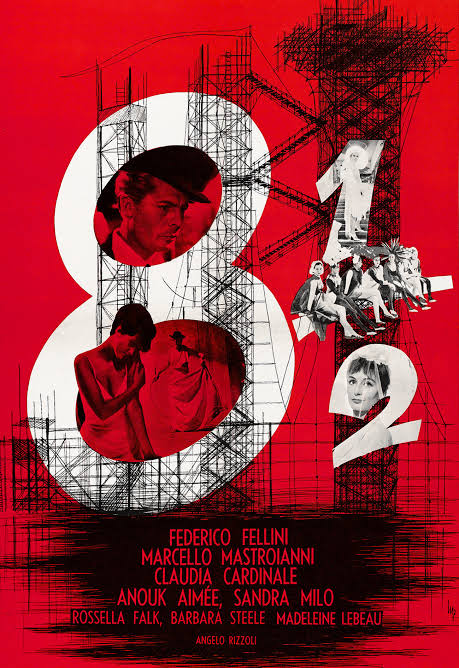
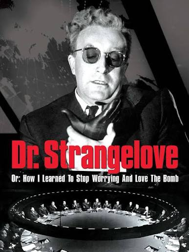
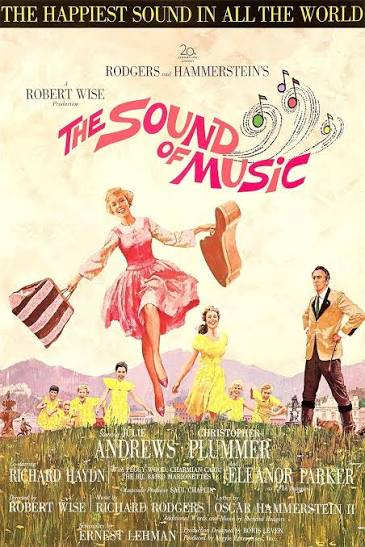
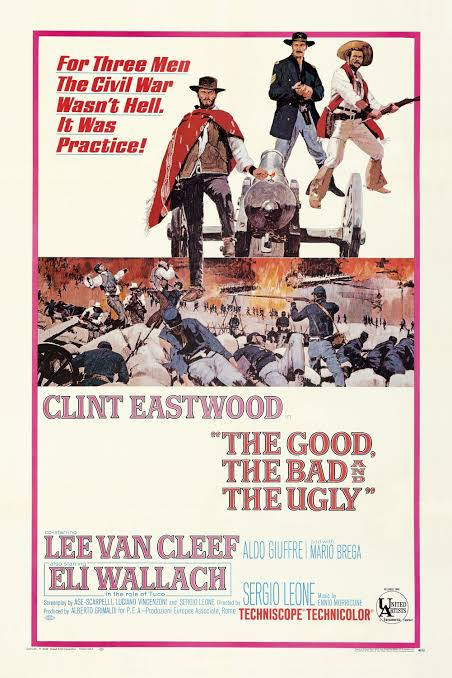
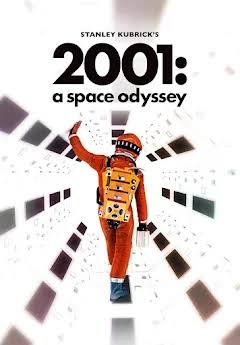
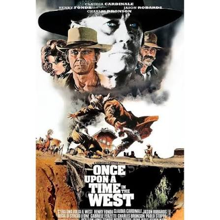

UNA DÉCADA DE CAMBIOS
Las Grandes Películas de los Años 60
Los años 60 transformaron el cine con historias
más atrevidas, nuevos estilos de dirección y
personajes complejos. Hollywood produjo grandes
películas épicas, mientras directores europeos
y asiáticos renovaban el lenguaje cinematográfico.
10 películas imprescindibles
Descubre diez películas esenciales de los años 60.
Cada tarjeta incluye un espacio para el póster,
el año de estreno, el género y una descripción.

1960
Psycho
Terror / Suspenso
Alfred Hitchcock creó una de las películas
de suspense más influyentes de la historia.
Su atmósfera, montaje y giros narrativos
cambiaron el cine de terror.

1960
La Dolce Vita
Drama
Federico Fellini retrata la vida nocturna
de Roma y la búsqueda de sentido de un
periodista rodeado de fama, lujo y excesos.

1962
Lawrence of Arabia
Épica / Aventura
La historia de T. E. Lawrence durante
la Primera Guerra Mundial destaca por
sus paisajes, su fotografía y su enorme
escala cinematográfica.

1962
To Kill a Mockingbird
Drama judicial
Un abogado defiende a un hombre negro
acusado injustamente en el sur de Estados
Unidos. La película aborda el racismo,
la justicia y la empatía.

1963
8½
Drama / Cine de autor
Fellini presenta a un director de cine
que atraviesa una crisis creativa.
Sueños, recuerdos y fantasía se mezclan
en una obra clave del cine moderno.

1964
Dr. Strangelove
Comedia / Sátira
Stanley Kubrick utiliza el humor negro
para satirizar la Guerra Fría y el peligro
de una guerra nuclear provocada por errores
y decisiones absurdas.

1965
The Sound of Music
Musical / Drama
Una joven institutriz transforma la vida
de una familia a través de la música.
Sus canciones y paisajes la convirtieron
en uno de los musicales más famosos.

1966
The Good, the Bad and the Ugly
Western
Tres pistoleros compiten por encontrar
un tesoro durante la Guerra Civil
estadounidense. Sergio Leone redefinió
el western con su estilo visual y su música.

1968
2001: A Space Odyssey
Ciencia ficción
Stanley Kubrick explora la evolución humana,
la inteligencia artificial y el universo.
Sus efectos visuales y su enfoque filosófico
marcaron la ciencia ficción.

1968
Once Upon a Time in the West
Western / Drama
Sergio Leone construye una historia de
venganza y poder en el Viejo Oeste,
reconocida por sus personajes, sus planos
y su inolvidable banda sonora.
Ganadoras del Óscar a Mejor Película
Esta lista muestra las películas ganadoras estrenadas
entre 1960 y 1969. El Óscar se entregaba normalmente
al año siguiente del estreno.
-
1960
The Apartment
Comedia dramática de Billy Wilder sobre
un empleado que presta su apartamento
a sus superiores y termina envuelto
en problemas personales.
-
1961
West Side Story
Musical inspirado en Romeo y Julieta,
ambientado en el conflicto entre dos
pandillas de Nueva York.
-
1962
Lawrence of Arabia
Épica histórica sobre T. E. Lawrence
y su participación en la revuelta árabe
durante la Primera Guerra Mundial.
-
1963
Tom Jones
Comedia de época basada en la novela
de Henry Fielding, con aventuras
y enredos románticos.
-
1964
My Fair Lady
Musical sobre una joven florista que
recibe clases de pronunciación y etiqueta
para entrar en la alta sociedad.
-
1965
The Sound of Music
Musical sobre Maria, una institutriz
que cambia la vida de la familia
von Trapp en Austria.
-
1966
A Man for All Seasons
Drama histórico sobre Thomas More,
quien se enfrenta al rey Enrique VIII
por sus convicciones.
-
1967
In the Heat of the Night
Un detective negro ayuda a investigar
un asesinato en una localidad sureña,
enfrentándose al racismo.
-
1968
Oliver!
Adaptación musical de Oliver Twist,
la historia de un huérfano que sobrevive
en las calles de Londres.
-
1969
Midnight Cowboy
Drama sobre dos hombres que buscan
sobrevivir en Nueva York. Ganó el Óscar
a mejor película en la ceremonia de 1970.
Nota: los años de la lista corresponden al estreno
de las películas, no a la ceremonia de premiación.
© Cine Clásico. Página educativa.
Diseño basado en Halcyonic de HTML5 UP.